Chapter9 Regression
In this chapter we are going to see how to conduct a regression analysis with time series data.
Regression analysis is a used for estimating the relationships between a dependent variable (DV) (also called outcome or response) and one or more independent variables (IV) (also called predictors or explanatory variables).
A standard regression model \(Y\) = \(\beta\) + \(\beta x\) + \(\epsilon\) has no time component. Differently, a time series regression model includes a time dimension and can be written, in a simple and general formulation, using just one explanatory variable, as follows:
\[ y_t = \beta_0 + \beta_1x_t + \epsilon_t \]
In this equation, \(y_t\) is the time series we try to understand/predict (the dependent variable (DV)), \(\beta_0\) is the intercept (a constant value that represents the expected mean value of \(y_t\) when \(x_t = 0\)), the coefficient \(\beta_1\) is the slope, representing the average change in \(y\) at one unit increase in \(x\) (the independent variable (IV) or explanatory variable), and \(\epsilon_t\) is the time series of residuals (the error term).
A multiple regression, with more than one explanatory variable, can be written as follows:
\[ y_t = \beta_0 + \beta_1x_{1,t} + \beta_2x_{2,t} + ... + \beta_kx_{k,t} + \epsilon_t \]
9.1 Static and Dynamic Models
From a time series analysis perspective, a general distinction can be made between “static” and “dynamic” regression models:
- A static regression model includes just contemporary relations between the explanatory variables (independent variables) and the response (dependent variable). This model could be appropriate when the expected value of the response changes immediately when the value of the explanatory variable changes. Considering a model with \(k\) independent variables {\(x_1\), \(x_2\), …, \(x_k\)}, a static (multiple) regression model, has the form just seen above:
\[ y_t = \beta_0 + \beta_1x_{1,t} + \beta_2x_{2,t} + ... + \beta_kx_{k,t} + \epsilon_t \]
Each \(\beta\) coefficient models the instant change in the conditional expected value of the response variable \(y_t\) as the value of \(x_{k,t}\) changes by one unit, keeping constant all the other predictors (i.e.: the other \(x_{k,t}\)):
- A dynamic regression model includes relations between both the current and the lagged (past) values of the explanatory (independent) variables, that is, the expected value of the response variable may change after a change in the values of the explanatory variables.
\[ \begin{split} y_t &= \beta_0 + \beta_{10} x_{1,t} + \beta_{11} x_{1,t-1} + \dots + \beta_{1m} x_{1,t-m} \\ &\quad + \beta_{20} x_{2,t} + \beta_{21} x_{2,t-1} + \dots + \beta_{2m} x_{2,t-m} \\ &\quad + \dots \\ &\quad + \beta_{k0} x_{k,t} + \beta_{k1} x_{k,t-1} + \dots + \beta_{km} x_{k,t-m} \\ &\quad + \epsilon_t \end{split} \]
Despite the differences between these two analytic perspectives, the term dynamic regression is also used, in the literature, in a more general way to refer to regression models with autocorrelated errors (also when they are used to analyze only contemporary relations between variables).
9.2 Regression models
Except for the possible use of lagged regressors, which are typical of time series, the above described statistical models are standard regression models, commonly used with cross-sectional data.
Standard linear regression models can sometimes work well enough with time series data, if specific conditions are met. Besides standard assumptions of linear regression1, a careful analysis should be done in order to ascertain that residuals are not autocorrelated, since this can cause problems in the estimated model.
In this chapter we’ll see how to deal with autocorrelated residuals. However, even before that, it is important that the series are stationary, in order to avoid possible spurious correlations.
9.2.1 Stationarity
We already discussed stationarity in the previous chapters. Here we can observe that time series can be nonstationary due to different reasons, thus different strategies can be employed to stationarize the data.
For instance, a nonstationary series can be a series with unequal variance over time. A common way to try to fix the problem is by applying a log-transformation.
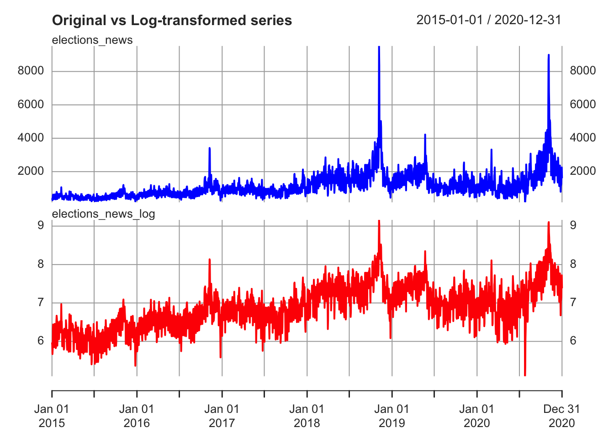
Another reason for nonstationarity is the periodic variation due to seasonality (regular fluctuations in a time series that follow a specific time pattern, e.g.: social media activity during week-ends, Christmas effect in consumption, etc.).
To remove the seasonal pattern, you might want to use a seasonally-adjusted time series. Otherwise, you could create a dummy variable for the seasonal period (that is, a variable that follows the seasonal pattern in the data in order to account, in the model, for these fluctuations).
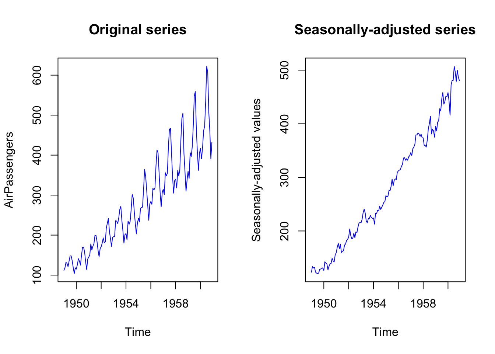
An important reason for nonstationarity is also the presence of a trend in the data. There are stochastic trends and deterministic trends. Deterministic trends are a fixed function of time, while stochastic trends change in an unpredictable way.
Series with a deterministic trend are also called trend stationary because they can be stationary around a deterministic trend, and it could be possible to achieve stationarity by removing the time trend. In trend stationary processes, the shocks to the process are transitory and the process is mean reverting.
Processes with a stochastic trend are also called difference stationary because they can become stationary through differencing. In series with stochastic trends we could see that shocks have permanent effects.
When dealing with deterministic trend, we might want to work with detrended series.
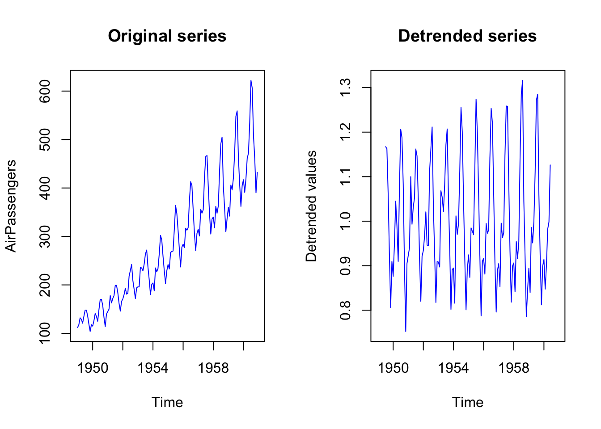
Otherwise, in regression analysis, it is more common to add a dummy variable consisting of a value that increases with time, to account for a linear deterministic time trend. This time-count variable will remove the deterministic trend from the dependent variable, allowing the other predictors to explain the remaining variance.
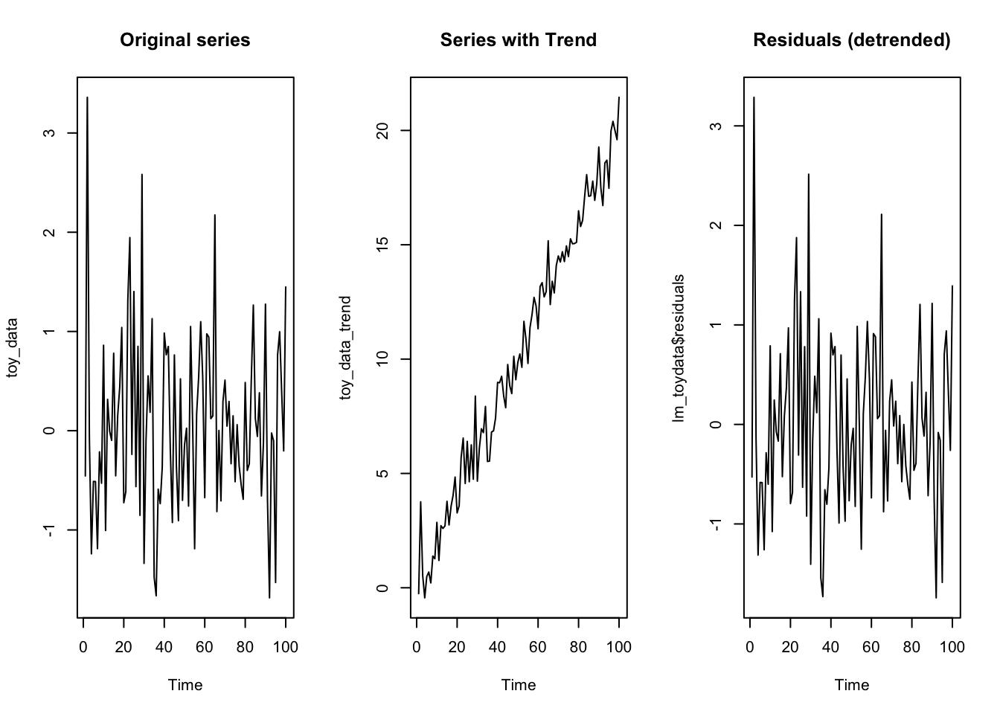
When we have a series with a stochastic trend, we can achieve stationarity through differencing.
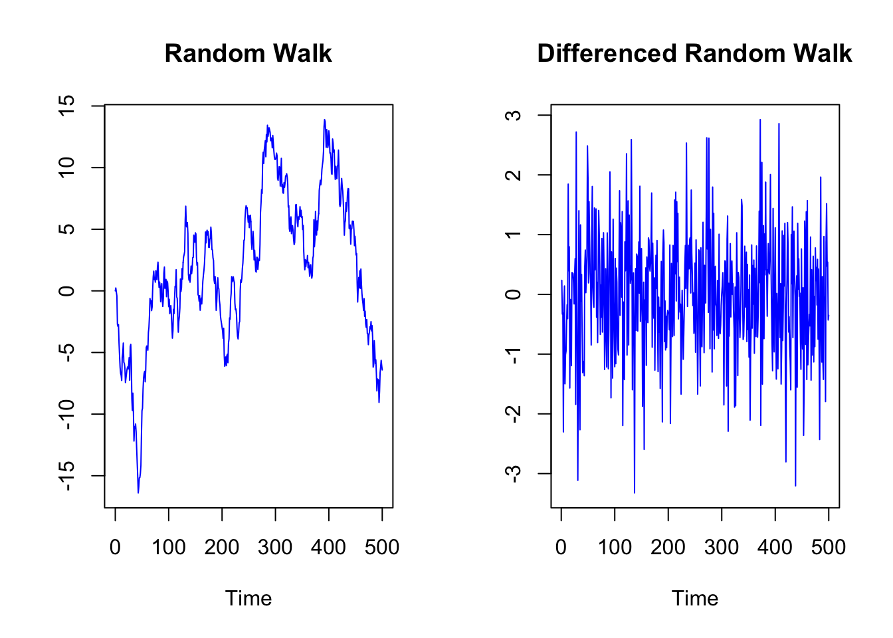
9.2.1.1 Tests for Stochastic and Deterministic Trend
The correct detrending method depends on the type of trend. First differencing is appropriate for intergrated I(1) time series and time-trend regression is appropriate for trend stationary I(0) time series.
In case of deterministic trend, differencing is the incorrect solution, while detrending the series in function of time (regressing the series on a variable such as time and saving the residuals) is the correct solution. Differencing when none is required (over-differencing) may induce dynamics into the series that are not part of the data-generating process (for instance, it could create a first-order moving average process).
Specific statistical tests have been developed to distinguish between the two types of trends. In particular, unit root tests and stationary test can be used to determine if trending data should be first differenced or regressed on deterministic functions of time to render the data stationary.
Considering a simple model like the following, where \(Td\) is a deterministic linear trend and \(z_t\) is an autoregressive process of order 1 AR(1). The difference between a process with stochastic and deterministic trend can be traced back to the parameter \(|\phi|\): When \(|\phi| = 1\), then \(z_t\) is a stochastic trend and \(y_t\) is an integrated process I(1) with drift (the so-called “drift” refers to the presence of a constant term, in this case \(\kappa\)). When \(\phi < 1\), the process is not integrated (I(0)) and \(y_t\) exhibits a deterministic trend2:
\[ \begin{split} y_t &= Td_t + z_t \\ Td_t &= \kappa + \delta_t \\ z_t &= \phi z_{t-1} + \epsilon_t, \quad \epsilon_t \sim N(0, \sigma^2) \end{split} \]
Let’s simulate and visualize the above equation (\(y_t = \kappa + \delta_t + \phi z_{t-1} + \epsilon_t\)):
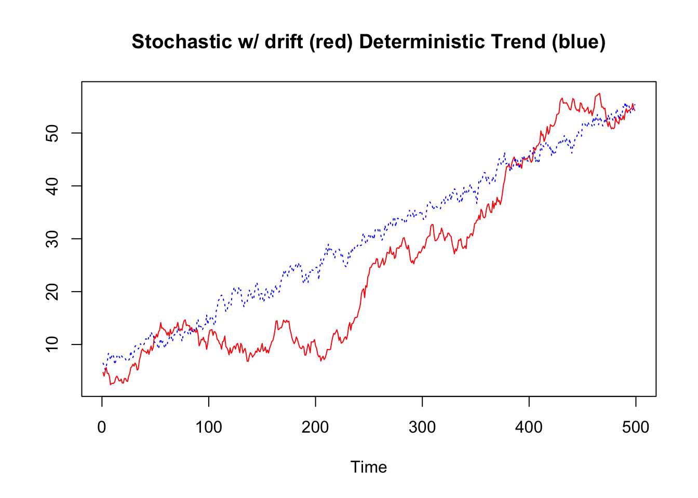
Unit root tests are aimed at testing the null hypothesis that \(|\phi| = 1\) (difference stationary), against the alternative hypothesis that \(|\phi| < 1\) (trend stationary).
Stationarity tests take the null hypothesis that \(y_t\) is trend stationary, and are based on testing for a moving average element in \(\Delta z_t\) (\(\Delta\) represents the operation of differencing).
\[ \begin{split} \text{Original} \\ y_t &= Td_t + z_t \\ Td_t &= \kappa + \delta_t \\ z_t &= \phi z_{t-1} + \epsilon_t, \quad \epsilon_t \sim N(0, \sigma^2) \end{split} \]
\[ \begin{split} \text{First difference} \\ \Delta y_t &= \Delta Td_t + \Delta z_t \\ \Delta Td_t &= \Delta \kappa + \Delta \delta_t = \delta \\ \Delta z_t &= \phi \Delta z_{t-1} + \Delta \epsilon_t = \phi \Delta z_{t-1} + \epsilon_t - \epsilon_{t-1} \end{split} \]
\(\Delta z_t\) can be also written as:
\[ \Delta \epsilon_t = \phi \Delta z_{t-1} + \epsilon_t + \theta \epsilon_{t-1} \]
with \(\theta = -1\). That is, when the series is trend stationary, taking the first difference results in overdifferencing and in the creation of a moving average (MA) term \(\theta \epsilon_{t-1}\). The creation of a moving average element, which is missing in the original series, is also why differencing a trend-stationary process is problematic.
9.2.1.1.1 KPSS Test
A test to verify if the series is trend stationary is the Kwiatkowski-Phillips-Schmidt-Shin (KPSS) test. It is one of the most commonly used stationarity test, and is implemented in the library tseries (function kpss.test). KPSS test the null hypothesis that the series is trend stationary.
In this case, the p-value of the test is higher than 0.05, so the test cannot reject the null hypothesis of trend stationarity. That is to say, there are some evidence of trend-stationary process.
##
## KPSS Test for Trend Stationarity
##
## data: y_I0
## KPSS Trend = 0.10404, Truncation lag
## parameter = 5, p-value = 0.1By changing the null from “Trend” to “Level”, the KPSS test can also test the null hypothesis of level stationarity. A level stationary time series is a time series with a non-zero but constant mean, that is to say, without trend.
##
## KPSS Test for Level Stationarity
##
## data: y_I0
## KPSS Level = 8.4092, Truncation lag
## parameter = 5, p-value = 0.01In this case, the KPSS test for level stationarity reject the null hypothesis, that is to say, the process seems not to be level stationary. Considered together, the KPSS tests suggest that the series has a deterministic trend.
If we use the KPSS test to test if the stochastic trend series we created above is trend or level stationary, the test rejects the null hypothesis (i.e.: reject the hypothesis of both a trend and level stationary process).
##
## KPSS Test for Trend Stationarity
##
## data: y_I1
## KPSS Trend = 1.5, Truncation lag parameter =
## 5, p-value = 0.01##
## KPSS Test for Level Stationarity
##
## data: y_I1
## KPSS Level = 7.7377, Truncation lag
## parameter = 5, p-value = 0.01When a series has a stochastic trend, we can achieve stationarity through differencing. Indeed, the KPSS test does not reject the null hypothesis of level stationarity when applied to the the stochastic-trend series, once differenced.
##
## KPSS Test for Level Stationarity
##
## data: diff(y_I1)
## KPSS Level = 0.18432, Truncation lag
## parameter = 5, p-value = 0.1In the above cases the KPSS results are correct, since we have simulated and tested a time series with a deterministic and stochastic trend. However, these kind of tests can also be wrong. For instance, it is possible they reject the null hypothesis when it is actually true (“Type I error”). For this reason, it can be useful to use more than one test. For instance, the KPSS can be used along with the Augmented Dickey-Fuller Test (ADF), a popular unit root test.
9.2.1.1.2 Augmented Dickey-Fuller (ADF) Test
The Augmented Dickey-Fuller Test (ADF) is a popular unit root test. An R implementation of the test can be found in the library tseries (function adf.test). The null hypothesis is that the series has a unit root, and the alternative hypothesis is that the series is stationary or trend stationary.
If we use the ADF test on the integrated series (which has a unit root), the test fails to reject the null hypothesis of unit root, which is correct.
##
## Augmented Dickey-Fuller Test
##
## data: y_I1
## Dickey-Fuller = -1.7632, Lag order = 7,
## p-value = 0.6785
## alternative hypothesis: stationaryIf we use the ADF test on the trend-stationary series (without unit root), the test rejects the null hypothesis of unit root, which is correct.
##
## Augmented Dickey-Fuller Test
##
## data: y_I0
## Dickey-Fuller = -5.8397, Lag order = 7,
## p-value = 0.01
## alternative hypothesis: stationaryIf we use the ADF test on the integrated series, after having transformed it through differencing, the test rejects the null hypothesis of unit root, which is correct.
##
## Augmented Dickey-Fuller Test
##
## data: diff(y_I1)
## Dickey-Fuller = -7.8913, Lag order = 7,
## p-value = 0.01
## alternative hypothesis: stationary9.2.1.1.3 Phillips-Perron Test
Another unit root test is the Phillips-Perron test. It differs from the ADF test in some aspects (how it deals with serial correlation and heteroskedasticity in the errors). Also this test is implemented in the library tseries (funtion pp.test). Results of the test are similar to those of the ADF test:
##
## Phillips-Perron Unit Root Test
##
## data: y_I0
## Dickey-Fuller Z(alpha) = -144.04, Truncation
## lag parameter = 5, p-value = 0.01
## alternative hypothesis: stationary##
## Phillips-Perron Unit Root Test
##
## data: y_I1
## Dickey-Fuller Z(alpha) = -5.4817, Truncation
## lag parameter = 5, p-value = 0.8039
## alternative hypothesis: stationary##
## Phillips-Perron Unit Root Test
##
## data: diff(y_I1)
## Dickey-Fuller Z(alpha) = -489.82, Truncation
## lag parameter = 5, p-value = 0.01
## alternative hypothesis: stationaryIn case of uncertainty, more than one test can be used.
9.2.3 Regression with ARMA errors
While in the previous case a standard linear model works well, it is often the case that residuals of times series regressions are autocorrelated, and a linear regression model can be suboptimal or even wrong. For instance, let’s create other two time series that are, as the previous ones, cross-correlated at lag 3 and 4, but with a bit more complicated structure.
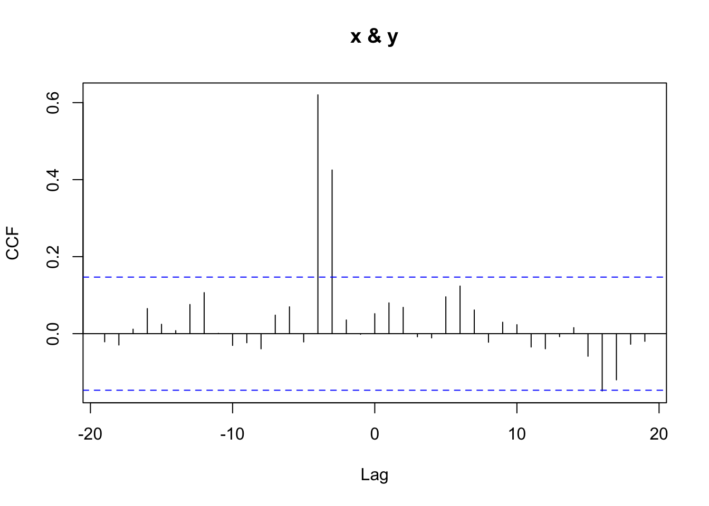
## $ccf
##
## Autocorrelations of series 'X', by lag
##
## -19 -18 -17 -16 -15 -14 -13
## -0.021 -0.029 0.012 0.065 0.024 0.008 0.076
## -12 -11 -10 -9 -8 -7 -6
## 0.107 0.001 -0.031 -0.024 -0.039 0.048 0.070
## -5 -4 -3 -2 -1 0 1
## -0.021 0.620 0.425 0.036 -0.001 0.052 0.080
## 2 3 4 5 6 7 8
## 0.068 -0.008 -0.011 0.096 0.124 0.062 -0.022
## 9 10 11 12 13 14 15
## 0.030 0.023 -0.035 -0.039 -0.008 0.016 -0.059
## 16 17 18 19
## -0.149 -0.120 -0.027 -0.020
##
## $model
##
## Call:
## ar.ols(x = x)
##
## Coefficients:
## 1 2 3 4 5
## 0.6362 0.1109 0.0496 -0.1533 -0.0240
## 6 7 8 9 10
## -0.0499 0.2041 0.0221 -0.0990 -0.0981
## 11 12 13 14
## 0.1703 -0.0558 -0.0812 0.1179
##
## Intercept: 0.006091 (0.06307)
##
## Order selected 14 sigma^2 estimated as 0.7336Considering the autocorrelated structure of the series, the true model can be written as follows:
\[ \begin{split} y_t &= 15 + 0.8 x_{t-3} + 1.5 x_{t-4} + \eta_t \\ \eta_t &= 0.7 \eta_{t-1} + \epsilon_t + 0.6 \epsilon_{t-1} \\ \epsilon &\sim N(0, 1) \end{split} \]
It is possible to calculate the regression using the lm function, calculating the lagged variables by hand, or to use the dynml library and function.
##
## Call:
## lm(formula = xy2_series[, 1] ~ xy2_series[, 3:4])
##
## Residuals:
## Min 1Q Median 3Q Max
## -4.9200 -1.4508 0.0667 1.5395 5.1083
##
## Coefficients:
## Estimate
## (Intercept) 14.9005
## xy2_series[, 3:4]x2Lagged.xLag3 1.0407
## xy2_series[, 3:4]x2Lagged.xLag4 1.5171
## Std. Error t value
## (Intercept) 0.1486 100.273
## xy2_series[, 3:4]x2Lagged.xLag3 0.1595 6.523
## xy2_series[, 3:4]x2Lagged.xLag4 0.1599 9.488
## Pr(>|t|)
## (Intercept) < 2e-16 ***
## xy2_series[, 3:4]x2Lagged.xLag3 6.14e-10 ***
## xy2_series[, 3:4]x2Lagged.xLag4 < 2e-16 ***
## ---
## Signif. codes:
## 0 '***' 0.001 '**' 0.01 '*' 0.05 '.' 0.1 ' ' 1
##
## Residual standard error: 2.028 on 189 degrees of freedom
## (12 observations deleted due to missingness)
## Multiple R-squared: 0.6735, Adjusted R-squared: 0.67
## F-statistic: 194.9 on 2 and 189 DF, p-value: < 2.2e-16##
## Time series regression with "ts" data:
## Start = 5, End = 196
##
## Call:
## dynlm(formula = y2_series ~ L(x2_series, 3) + L(x2_series, 4))
##
## Residuals:
## Min 1Q Median 3Q Max
## -4.9200 -1.4508 0.0667 1.5395 5.1083
##
## Coefficients:
## Estimate Std. Error t value
## (Intercept) 14.9005 0.1486 100.273
## L(x2_series, 3) 1.0407 0.1595 6.523
## L(x2_series, 4) 1.5171 0.1599 9.488
## Pr(>|t|)
## (Intercept) < 2e-16 ***
## L(x2_series, 3) 6.14e-10 ***
## L(x2_series, 4) < 2e-16 ***
## ---
## Signif. codes:
## 0 '***' 0.001 '**' 0.01 '*' 0.05 '.' 0.1 ' ' 1
##
## Residual standard error: 2.028 on 189 degrees of freedom
## Multiple R-squared: 0.6735, Adjusted R-squared: 0.67
## F-statistic: 194.9 on 2 and 189 DF, p-value: < 2.2e-16The estimated model is the following:
\[ \begin{split} y_t &= 14.9005 + 1.0407 x_{t-3} + 1.5171 x_{t-4} + \epsilon_t \\ \epsilon &\sim N(0, 2.028^2) \end{split} \]
The original series can also be visualized with the fitted values (the values resulting from the model), to visually inspect how well the model represents the original series. The differences between the original and the fitted series are the residuals.
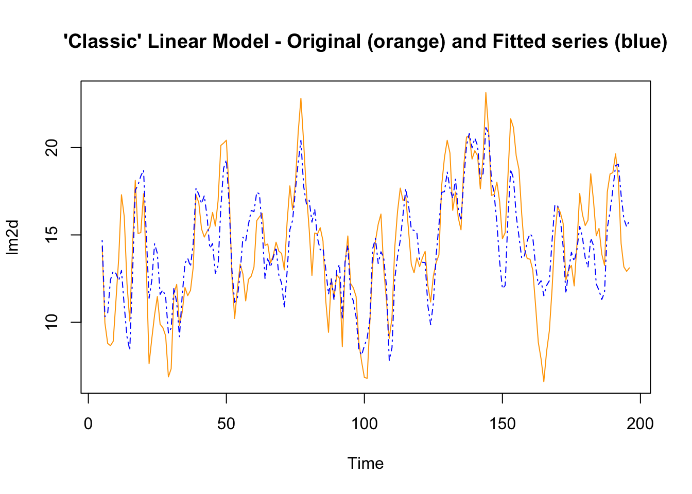
The diagnostic plots of the residuals show the presence of autocorrelation, and the Breusch-Godfrey test is highly significant (its value is far lower than the critical value \(\alpha = 0.05\))
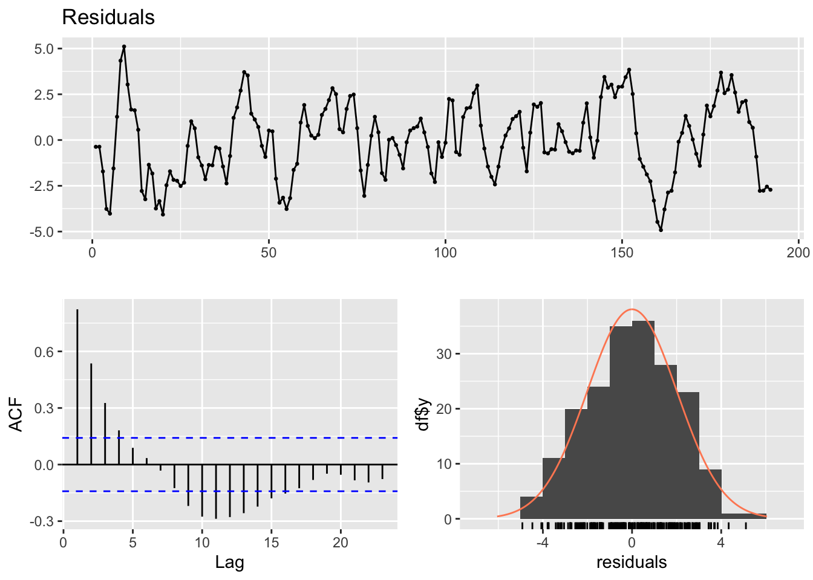
##
## Breusch-Godfrey test for serial correlation
## of order up to 10
##
## data: Residuals
## LM test = 149.45, df = 10, p-value < 2.2e-16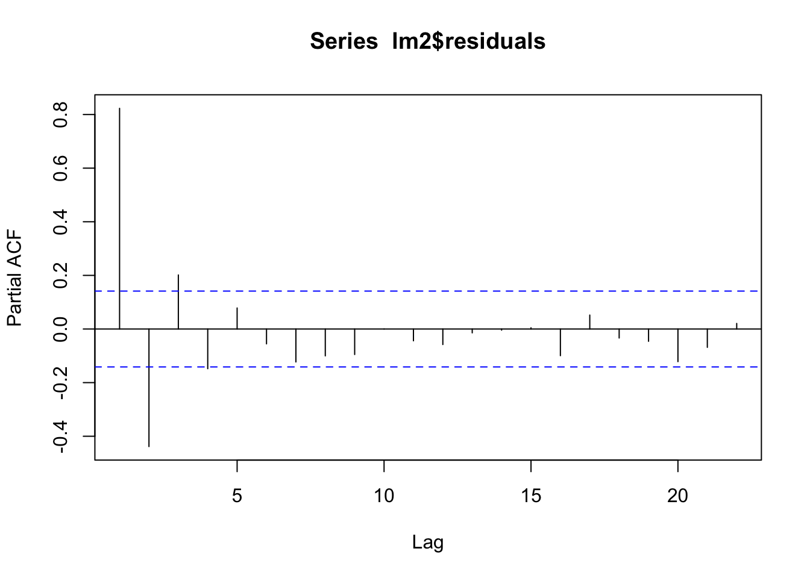
In this case, it’s better to take into account the residuals’ autocorrelation by using a regression model capable to handle autocorrelated time series structures.
In the previous chapter we said that ARIMA models are a special type of regression model, in which the dependent variable is the time series itself, and the independent variables are all lags of the time series. This model is capable to take into account the autocorrelated structure of time series.
ARIMA is a modeling technique that can be applied to a single time series, but it can be extended to include additional, exogenous variables. The ARIMA model including exogenous regressors (i.e.: other time series besides the lagged dependent variable) is like a multiple regression models for time series. In particular, it can be considered a regression model capable to control for autocorrelation in residuals.
It is possible to use more than one option to fit an ARIMA model with external regressors. A convenient option is provided by the function auto.arima, in the package forecast. This library has an argument xreg which can be use with a numerical vector or matrix of external regressors, which must have the same number of rows as y (see ?auto.arima).
## Series: xy2_series[, 1]
## Regression with ARIMA(1,0,1) errors
##
## Coefficients:
## ar1 ma1 intercept x2Lagged.xLag3
## 0.6863 0.6491 14.8532 0.9506
## s.e. 0.0555 0.0528 0.3607 0.0757
## x2Lagged.xLag4
## 1.5732
## s.e. 0.0762
##
## sigma^2 = 0.9482: log likelihood = -265.76
## AIC=543.52 AICc=543.97 BIC=563.06The resulting model seems to be more appropriate than the previous one, fitted by using just a “classic” linear regression. This is clear also by comparing the two models through the AIC criterion (Akaike information criterion). The AIC value is used to compare the goodness-of-fit of different models fitted to the same dataset. The lower the AIC value, the better the fit (see also the next paragraph).
The auto.arima function prints the AIC value by default, while this value is not given with the lm function. To get it, we need to use the AIC function.
## [1] 821.4495In this case, the ARIMA regression model results a far better model (AIC=543.52) compared with the classic linear model (AIC=821.45).
\[ \begin{split} y_t &= 14.8532 + 0.9506 x_{t-3} + 1.5732 x_{t-4} + \eta_t \\ \eta_t &= 0.6863 \eta_{t-1} + \epsilon_t + 0.6491 \epsilon_{t-1} \\ \epsilon &\sim N(0, 0.9482) \end{split} \]
Diagnostic analysis of the residuals, shows that there is no concerning sign of autocorrelation in the residuals, which looks like white noise. Also the test for autocorrelated errors is not significant (the default test for autocorrelation when testing an ARIMA models with external regressors in the forecast package is the Ljung-Box test)3).
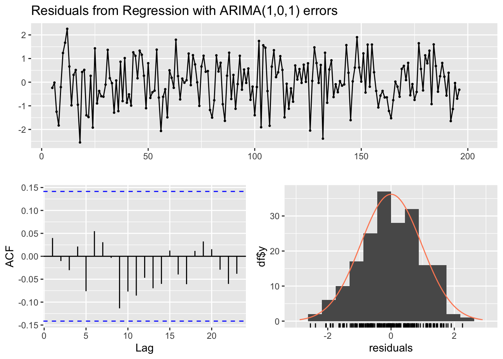
##
## Ljung-Box test
##
## data: Residuals from Regression with ARIMA(1,0,1) errors
## Q* = 6.3861, df = 8, p-value = 0.6041
##
## Model df: 2. Total lags used: 10Also by visually inspect the original series along with the fitted series (the values resulting from the model), it can be seen that the model is better than the previous one.
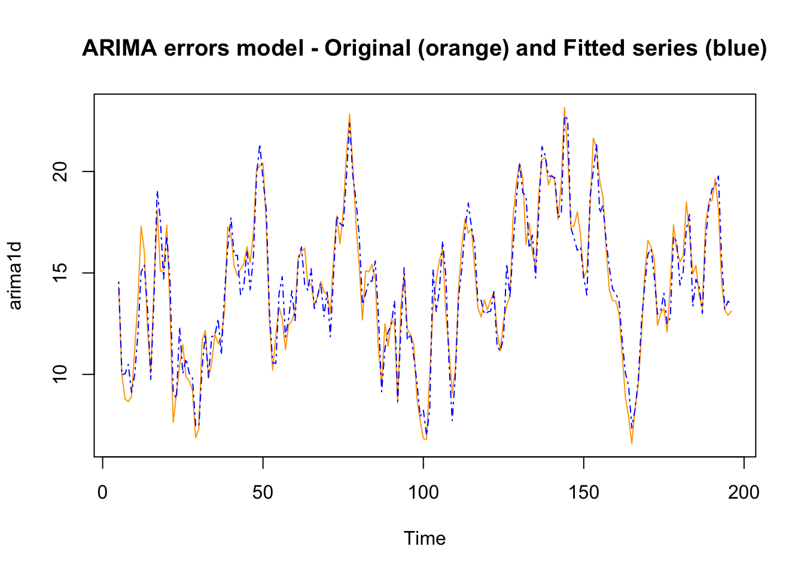
We can also compare the fitted versus original values by using a scatterplot. A better model produces a thinner diagonal line.
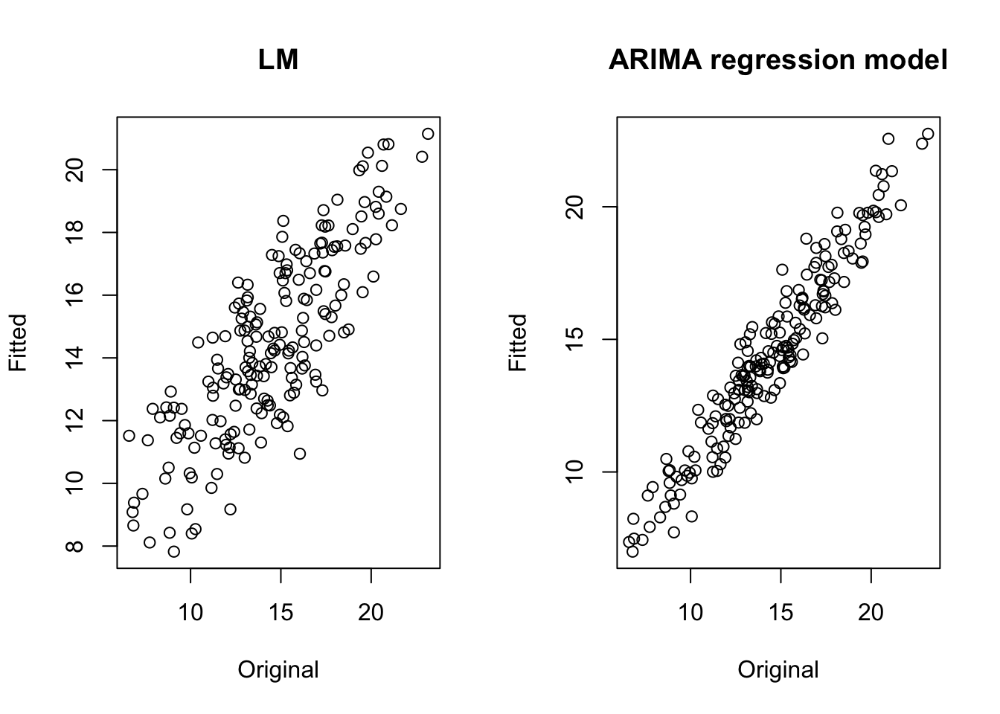 The auto.arima function does not give the statistical significance of the coefficients (the approach adopted by the forecast library is different, based on the choice of the best model to do forecasting), but it is possible to get that by using the function coeftest in the library lmtest.
##
## z test of coefficients:
##
## Estimate Std. Error z value
## ar1 0.686330 0.055525 12.361
## ma1 0.649134 0.052850 12.283
## intercept 14.853152 0.360689 41.180
## x2Lagged.xLag3 0.950588 0.075705 12.557
## x2Lagged.xLag4 1.573242 0.076224 20.640
## Pr(>|z|)
## ar1 < 2.2e-16 ***
## ma1 < 2.2e-16 ***
## intercept < 2.2e-16 ***
## x2Lagged.xLag3 < 2.2e-16 ***
## x2Lagged.xLag4 < 2.2e-16 ***
## ---
## Signif. codes:
## 0 '***' 0.001 '**' 0.01 '*' 0.05 '.' 0.1 ' ' 19.2.4 Count regression models
The models described above are mostly used with continuous variables (expressed as numeric or double in the R data format). However, it is often the case that time series are composed of integer values, or count data (expressed as integer).
Sometimes, the above mentioned methods work well also with this type of data (for instance, when the counts are large). Other times, time series model developed for count data can be a better choice (for instance, when the series include mostly small integer values).
Two of the most common statistical models to deal with count data are based on the Poisson and the Negative Binomial distributions. These probability distributions are the ones that are usually employed to model count data.
There are a few libraries to fit count time series regression models in R. We take into consideration tscount, and its function tsglm.
We consider, as an example of the tscount function to fit count time series regression models, the dataset “Seatbelts” (monthly number of killed drivers of light goods vehicles in Great Britain between January 1969 and December 1984), following the paper that describes the tscount library.
The authors of the package write in the paper (par. 7.2) describing the library:
This time series is part of a dataset which was first considered by Harvey and Durbin (1986) for studying the effect of compulsory wearing of seatbelts introduced on 31 January 1983. The dataset, including additional covariates, is available in R in the object Seatbelts. In their paper Harvey and Durbin (1986) analyze the numbers of casualties for drivers and passengers of cars, which are so large that they can be treated with methods for continuous-valued data. The monthly number of killed drivers of vans analyzed here is much smaller (its minimum is 2 and its maximum 17) and therefore methods for count data are to be preferred.
We are going to fit a model aimed at capturing a first order autoregressive AR(1) term and a yearly seasonality by a 12th order autoregressive term.
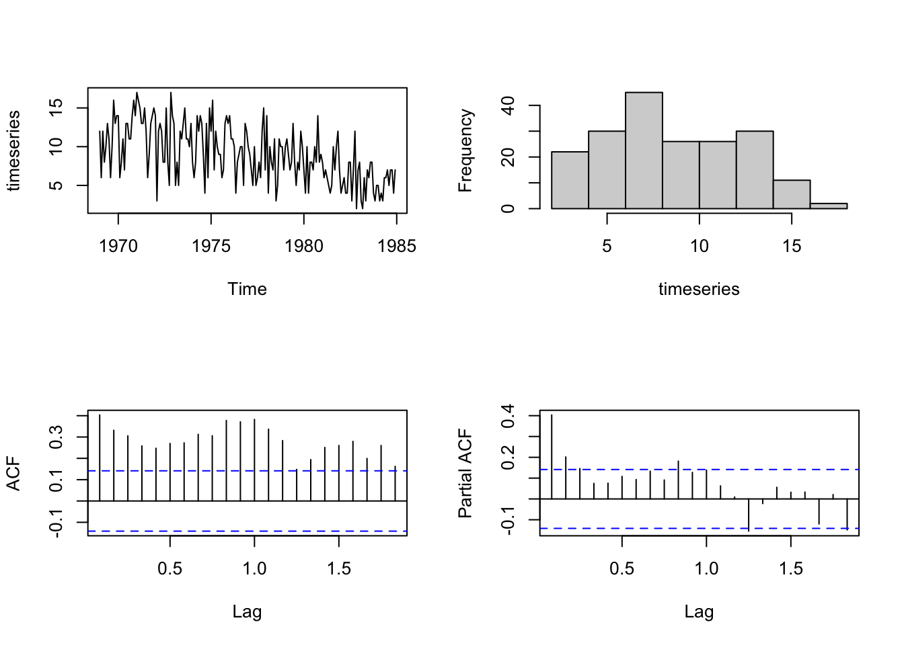
The function tsglm allows users to declare the autoregressive and seasonal autoregressive terms in a convenient way (in the following part of the function: model = list(past_obs = c(1, 12))).
It is possible to check the residuals with the usual plots.
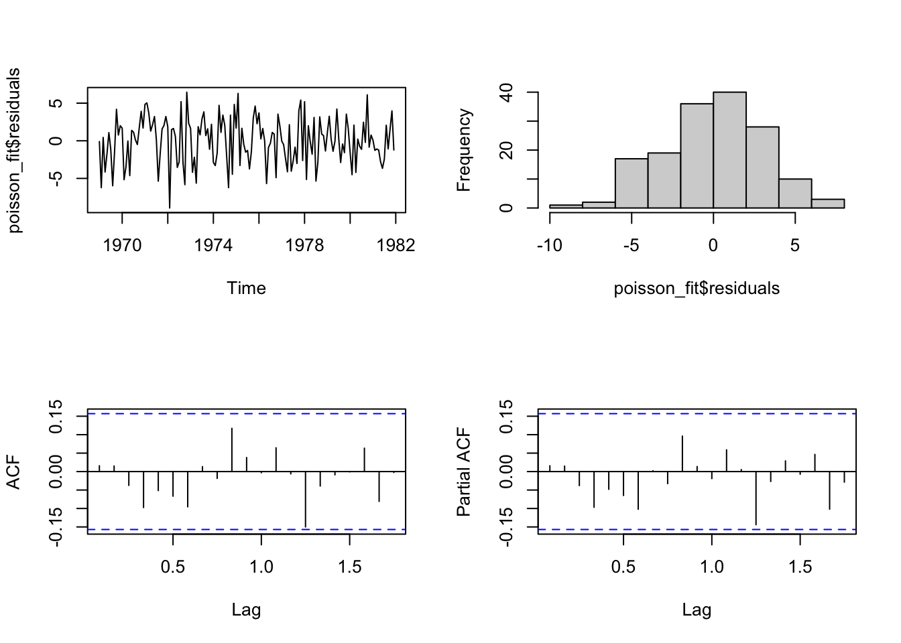
The function summary can be used to get the parameter estimates for the model (in this case the function can also employ a parametric bootstrap procedure (B) to obtain standard errors and confidence intervals of the regression parameters. The authors use B=500 in the original paper, since in their experience this value yields stable results. Higher B values can be more precise but require time to be calculated).
##
## Call:
## tsglm(ts = timeseries_until1981, model = list(past_obs = c(1,
## 12)), xreg = regressors_until1981, link = "log", distr = "poisson")
##
## Coefficients:
## Estimate Std.Error CI(lower)
## (Intercept) 1.83284 0.367830 1.11191
## beta_1 0.08672 0.080913 -0.07187
## beta_12 0.15288 0.084479 -0.01269
## PetrolPrice 0.83069 2.303555 -3.68420
## linearTrend -0.00255 0.000653 -0.00383
## CI(upper)
## (Intercept) 2.55377
## beta_1 0.24530
## beta_12 0.31846
## PetrolPrice 5.34557
## linearTrend -0.00127
## Standard errors and confidence intervals (level = 95 %) obtained
## by normal approximation.
##
## Link function: log
## Distribution family: poisson
## Number of coefficients: 5
## Log-likelihood: -396.1765
## AIC: 802.3529
## BIC: 817.6022
## QIC: 802.3529The model is as follows:
\[ log(\lambda_t) = 1.83 + 0.09Y_{t-1} + 0.15Y_{t-12} + 0.83X_t - 0.003t \] In the above equation notice that, the Poisson regression, models the logarithm of the Y values at times t (expressed as \(log(\lambda_t)\)).
Another example (using the dataset you can download here):
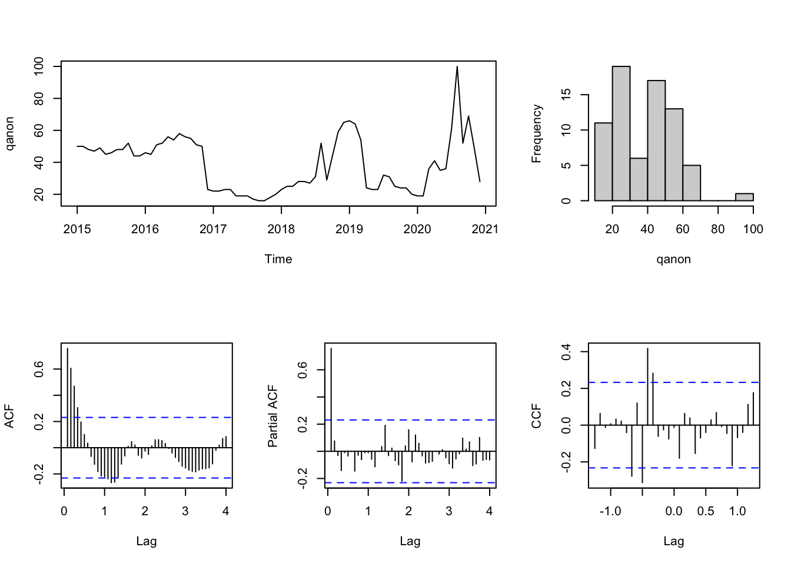
##
## Autocorrelations of series 'X', by lag
##
## -1.2500 -1.1667 -1.0833 -1.0000 -0.9167 -0.8333
## -0.127 0.064 -0.013 0.008 0.033 0.022
## -0.7500 -0.6667 -0.5833 -0.5000 -0.4167 -0.3333
## -0.041 -0.278 0.120 -0.313 0.417 0.282
## -0.2500 -0.1667 -0.0833 0.0000 0.0833 0.1667
## -0.061 -0.025 -0.075 -0.012 -0.180 0.063
## 0.2500 0.3333 0.4167 0.5000 0.5833 0.6667
## 0.039 -0.154 -0.070 -0.040 0.029 0.068
## 0.7500 0.8333 0.9167 1.0000 1.0833 1.1667
## -0.008 -0.045 -0.221 -0.068 -0.039 0.112
## 1.2500
## 0.177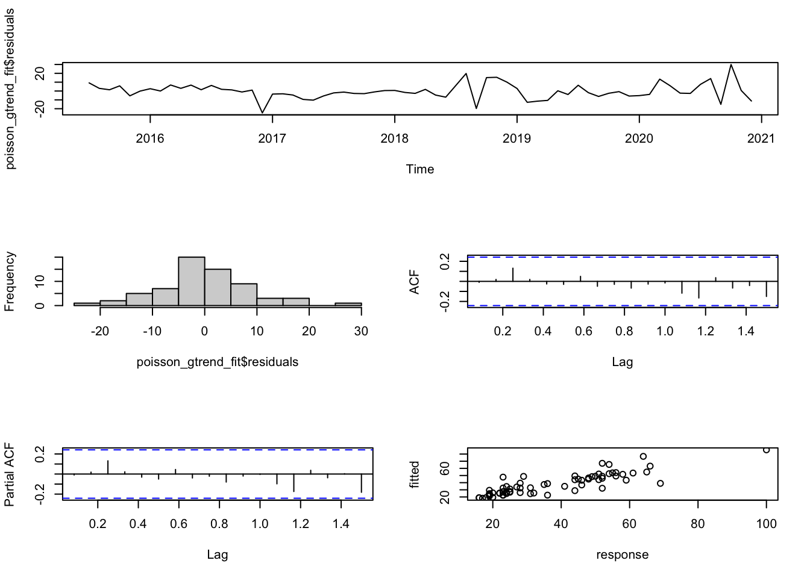
Besides checking the residuals, it is possible to plot the PIT histogram, provided by the function pit in tscount:
A PIT histogram is a tool for evaluating the statistical consistency between the probabilistic forecast and the observation. The predictive distributions of the observations are compared with the actual observations. If the predictive distribution is ideal the result should be a flat PIT histogram with no bin having an extraordinary high or low level. For more information about PIT histograms see the references listed below.
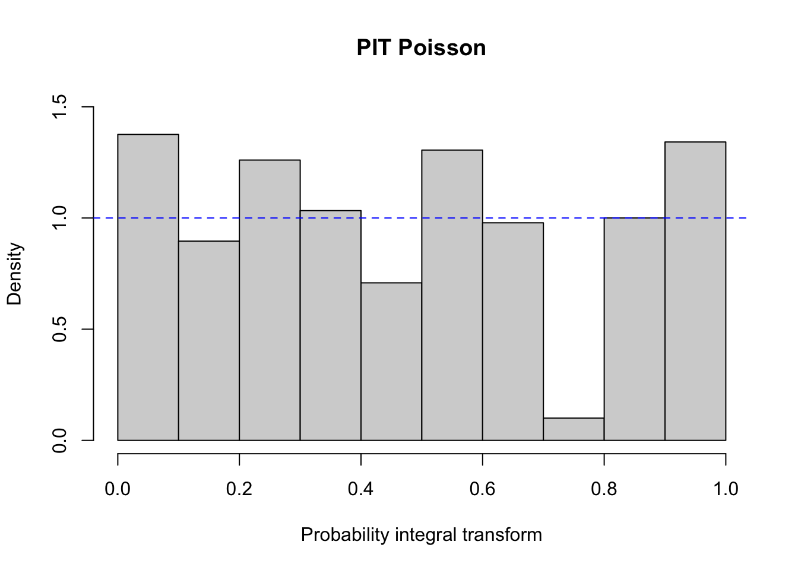
In the library are included other diagnostic tools and metrics that can help choosing between poisson and negative binomial models (see the paper for further information).
The function summary prints the coefficients of the model and their confidence interval.
##
## Call:
## tsglm(ts = qanon, model = list(past_obs = 1), xreg = reg, link = "log",
## distr = "poisson")
##
## Coefficients:
## Estimate Std.Error CI(lower)
## (Intercept) 0.58373 0.18036 0.230232
## beta_1 0.83746 0.04834 0.742715
## fake_news_lag4 0.00892 0.00274 0.003546
## fake_news_lag5 0.00638 0.00354 -0.000554
## fake_news_lag6 -0.01617 0.00272 -0.021506
## CI(upper)
## (Intercept) 0.9372
## beta_1 0.9322
## fake_news_lag4 0.0143
## fake_news_lag5 0.0133
## fake_news_lag6 -0.0108
## Standard errors and confidence intervals (level = 95 %) obtained
## by normal approximation.
##
## Link function: log
## Distribution family: poisson
## Number of coefficients: 5
## Log-likelihood: -239.6582
## AIC: 489.3163
## BIC: 500.2646
## QIC: 489.31639.3 Model Selection (AIC, AICc, BIC)
Statistical modeling is, usually, a recursive process that requires to fit several different models and, eventually, to select the most appropriate one. For instance, the Box and Jenkins approach employed to find an appropriate ARIMA model for a time series (see the previous chapter), requires the fitting of multiple models to find the most suitable one based on the data. Similarly, the “auto.arima” function in the library forecast, that automatizes the search for an appropriate ARIMA model, conducts a search over possible model.
To compare the models and select the most appropriate one, it is necessary to use some criteria. In the example above we have employed the AIC criterion. Other similar criteria are the AICc, and the BIC. They all can be used to find the most appropriate model, by comparing the goodness-of-fit of different models fitted to the same dataset. For instance, the documentation of the “auto.arima” function says that the function “returns best ARIMA model according to either AIC, AICc or BIC value”.
The AIC criterion is the acronym for Akaike information criterion). The lower the AIC value, the better the fit (see also the next paragraph).
The AICc criterion, is the same, but with a correction for small sample size. When the sample is small it can be used in place of the AIC criterion. As the sample size increases, the AICc converges to the AIC.
The BIC criterion is the Bayesian Information Criterion (or Schwartz’s Bayesian Criterion) and has a stronger penalty than the AIC for overparametrized models (more complex models, with several predictors).
These criteria can also be used when searching for an appropriate regression model, to compare several different models including different lags of the variables.
When comparing models by using these criteria, it is important that the models are fitted to the same dataset, otherwise the results are not comparable. This is an important aspect to take into account when using lagged predictors. For instance, you may want to try a model including one lagged predictor \(x_{t-1}\) and a model including two lagged predictors \(x_{t-1}\) and \(x_{t-2}\), and to compare them in order to select the best one according to AIC, AICc or the BIC criterion. However, when you add lagged predictor you loose data points.
## Time Series:
## Start = 1
## End = 42
## Frequency = 1
## y xLag0 xLag1
## 1 1.075501365 0.48505236 NA
## 2 -0.276740732 -1.20993027 0.48505236
## 3 -0.646751445 0.01724609 -1.20993027
## 4 0.102585633 0.70085715 0.01724609
## 5 -0.072519610 -0.40170226 0.70085715
## 6 1.619712305 -0.48727576 -0.40170226
## 7 0.687751998 -0.76436248 -0.48727576
## 8 0.234929596 2.97223380 -0.76436248
## 9 -0.430528202 -0.43578545 2.97223380
## 10 0.638039146 -1.35197954 -0.43578545
## 11 -0.217226469 -0.52868886 -1.35197954
## 12 0.020494309 -0.06027948 -0.52868886
## 13 -1.913357840 -0.03222441 -0.06027948
## 14 -0.526191144 0.55290101 -0.03222441
## 15 0.416282618 -0.25966064 0.55290101
## 16 0.457627862 -1.01400343 -0.25966064
## 17 -0.275639625 -0.86452761 -1.01400343
## 18 -0.353882346 0.11040086 -0.86452761
## 19 -0.901762561 -0.02452574 0.11040086
## 20 -1.052145243 -2.51548495 -0.02452574
## 21 0.832626641 0.44375488 -2.51548495
## 22 0.056411159 1.56218440 0.44375488
## 23 0.838708652 0.97180894 1.56218440
## 24 0.344611778 1.58747428 0.97180894
## 25 -1.088605832 -1.84530863 1.58747428
## 26 -0.527820628 -1.27107477 -1.84530863
## 27 3.061137014 2.03899229 -1.27107477
## 28 -0.520213835 -0.72914933 2.03899229
## 29 0.248244201 0.93447357 -0.72914933
## 30 0.046969519 -0.75324932 0.93447357
## 31 0.249449596 -0.68448064 -0.75324932
## 32 1.041843001 -0.59473197 -0.68448064
## 33 -0.338376495 -0.12412231 -0.59473197
## 34 0.201287727 -1.39014027 -0.12412231
## 35 0.602711731 -1.23556534 -1.39014027
## 36 -0.225018148 -1.28500792 -1.23556534
## 37 -0.010113590 -1.05225339 -1.28500792
## 38 -0.193597244 1.36496602 -1.05225339
## 39 0.009188137 -1.07721180 1.36496602
## 40 1.441899269 0.67538151 -1.07721180
## 41 NA NA 0.67538151
## 42 NA NA NA
## xLag2
## 1 NA
## 2 NA
## 3 0.48505236
## 4 -1.20993027
## 5 0.01724609
## 6 0.70085715
## 7 -0.40170226
## 8 -0.48727576
## 9 -0.76436248
## 10 2.97223380
## 11 -0.43578545
## 12 -1.35197954
## 13 -0.52868886
## 14 -0.06027948
## 15 -0.03222441
## 16 0.55290101
## 17 -0.25966064
## 18 -1.01400343
## 19 -0.86452761
## 20 0.11040086
## 21 -0.02452574
## 22 -2.51548495
## 23 0.44375488
## 24 1.56218440
## 25 0.97180894
## 26 1.58747428
## 27 -1.84530863
## 28 -1.27107477
## 29 2.03899229
## 30 -0.72914933
## 31 0.93447357
## 32 -0.75324932
## 33 -0.68448064
## 34 -0.59473197
## 35 -0.12412231
## 36 -1.39014027
## 37 -1.23556534
## 38 -1.28500792
## 39 -1.05225339
## 40 1.36496602
## 41 -1.07721180
## 42 0.67538151Thus, when you fit models with different lags, you have to fit them on the same dataset. In this case, for instance, you have to skip the NA rows, and use just the rows from 3 to 40.
Then you can compare the model, for instance, using the AIC criterion, and choose the model with the smallest value.
## [1] 95.11836## [1] 94.31932## [1] 96.07911Finally, you fit the model using all the available data.
## Series: example_data[, 1]
## Regression with ARIMA(0,0,0) errors
##
## Coefficients:
## xreg
## 0.2447
## s.e. 0.1120
##
## sigma^2 = 0.6511: log likelihood = -47.67
## AIC=99.34 AICc=99.66 BIC=102.72Besides these criteria, there are also other strategies for model selection.
9.4 Some examples in the literature
There are several examples of the use of time series regression models in the literature in the field of communication science.
For instance, in The Event-Centered Nature of Global Public Spheres: The UN Climate Change Conferences, Fridays for Future, and the (Limited) Transnationalization of Media Debates4, the authors examined whether the UN climate change conferences are conducive to an emergence of a transnational public sphere by triggering issue convergence and increased transnational interconnectedness across national media debates. They authors detail the method they follows in this way:
[…] Given the autoregressive nature and other properties of time series, an ordinary least squares regression analysis would violate the normality of error and the independence of observations assumption (Wells et al., 2019). Instead, we applied the dynamic regression approach (Gujarati & Porter, 2009; Hyndman & Athanasopoulos, 2018), which assumes that the error term follows an autoregressive integrated moving average (ARIMA) model (…). we found the best ARIMA structure of the error term by using the auto.arima function from the forecast R package (Hyndman & Khandakar, 2008). It searches for an ARIMA structure that can explain the most variance according to the Akaike information criterion (Akaike, 1973).
In this case they use the term “dynamic regression” to refer to a time series regression with ARIMA errors, but they did not include lagged values of their variables, thus analyzing contemporary relationships between variables.
The found, for instance, that events taking place on a supranational level of governance (…) consistently led to spikes in media attention across countries. In contrast, a bottom-up effort such as Fridays for Future showed an inconsistent relationship with media attention across the four countries.

In Online incivility, cyberbalkanization, and the dynamics of opinion polarization during and after a mass protest event5, the authors used both standard regression and regression with ARIMA errors to show that “online incivility — operationalized as the use of foul language — grew as volume of political discussions and levels of cyberbalkanization increased. Incivility led to higher levels of opinion polarization.”. Also in this case the authors analyze a “static process”, that is, focus on contemporary relationships between variables.

In Beyond cognitions: A longitudinal study of online search salience and media coverage of the president6, the authors used regression models with ARIMA errors to examine shifts in newswire coverage and search interest among Internet users in President Obama during the first two years of his administration (2009-2010).

In this case, the authors analyze relationships between variables taking into account lagged values, thus adopting a “dynamic process” perspective. For instance, they write:
RQ2 sought to determine the time span of linkages between coverage volume and search volume. (…) ARIMA models were run to gauge the dynamics of mutual influence between these two time series. The first model examined the effect of coverage volume on search volume over time (i.e., basic agenda setting) (…) presidential public relations, was included as an additional input series. The first model, with search volume being a single dependent variable, was identified through a close examination of autocorrelation functions (ACFs) and partial autocorrelation functions (PACFs). This analysis revealed a classic autoregressive model for the series (1, 0, 0). […] According to the results, shifts in aggregate search volume over this two-year period were significantly predicted by coverage volume over the prior five weeks (p < .010)* and by presidential public relations efforts in the preceding two, three (p < .001), and five weeks (p < .005). The ARIMA model with two predictors was correctly specified (Ljung–Box Q = 18.132, p = .381) and it explained roughly 35% of the observed variation in the series.
In AIDS in black and white: The influence of newspaper coverage of HIV/AIDS on HIV/AIDS testing among African Americans and White Americans, 1993–20077, the authors examined the effect of newspaper coverage of HIV/AIDS on HIV testing behavior in a U.S. population., using a lagged regression to support causal order claims by ensuring that newspaper coverage precedes the testing behavior with the inclusion of the 1-month lagged newspaper coverage variable in the model. Counterintuitively, they found that the news media coverage had a negative effect on testing behavior: For every additional 100 HIV/AIDS risk related newspaper stories published in this group of U.S. newspapers each month, there was a 1.7% decline in HIV testing levels in the following month, with a higher negative effects on African Americans.

1) Linearity: The relationship between X and Y must be linear; 2) Independence of errors: There is not a relationship between the residuals and the Y variable; 3) Normality of errors: The residuals must be approximately normally distributed; 4) Equal variances: The variance of the residuals is the same for all values of X↩︎
Reference of this part is Zivot E., Wang J. (2003), Unit Root Tests, in Modeling Financial Time Series with S-Plus®. Springer, New York↩︎
There are many tests for detecting autocorrelation. Besides the already mentioned Breusch-Godfrey test and Ljung-Box test, other popular tests are the Durbin Watson test, and the Box–Pierce test. Each test has its own characteristics. For instance, the Durbin-Watson test is a popular way to test for autocorrelation, but it shouldn’t be used with lagged dependent variables. In this case it can be used the Breusch-Godfrey test↩︎
Wozniak, A., Wessler, H., Chan, C. H., & Lück, J. (2021). The Event-Centered Nature of Global Public Spheres: The UN Climate Change Conferences, Fridays for Future, and the (Limited) Transnationalization of Media Debates. International Journal of Communication, 15(27)↩︎
Lee, F. L., Liang, H., & Tang, G. K. (2019). Online incivility, cyberbalkanization, and the dynamics of opinion polarization during and after a mass protest event. International Journal of Communication, 13, 20.↩︎
Ragas, M. W., & Tran, H. (2013). Beyond cognitions: A longitudinal study of online search salience and media coverage of the president. Journalism & Mass Communication Quarterly, 90(3), 478-499.↩︎
Stevens, R., & Hornik, R. C. (2014). AIDS in black and white: The influence of newspaper coverage of HIV/AIDS on HIV/AIDS testing among African Americans and White Americans, 1993–2007. Journal of health communication, 19(8), 893-906↩︎